Lecture 9
A part of the loss landscape where the gradient of the loss with respect to a parameter…
RNN For Prediction:
RNN For Generation:
RNN For Prediction:
RNN For Generation:
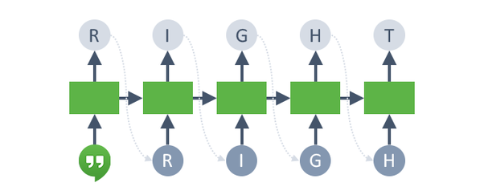
Unlike other models we discussed so far, the training time behaviour of Generative RNNs will be different from the test time behaviour
Test time behaviour:
During training, we try to get the RNN to generate one particular sequence in the training set:
Q1: What kind of a problem is this? (regression or classification?)
Q2: What loss function should we use during training?
First classification problem:
First classification problem:
Second classification problem:
Second classification problem:
Continue until we get to the “<EOS>” (end of string) token
Another approach is to model text one character at a time
This solves the problem of what to do about previously unseen words.
Note that long-term memory is essential at the character level!
Another common example of a sequence-to-sequence task (seq2seq) is machine translation.
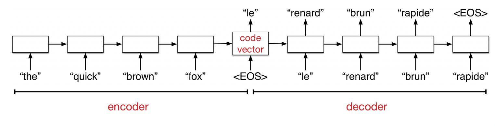
The network first reads and memorizes the sentences. When it sees the “end token”, it starts outputting the translation. The “encoder” and “decoder” are two different networks with different weights.
The encoder network reads an input sentence and stores all the information in its hidden units.
The decoder network then generates the output sentence one word at a time.
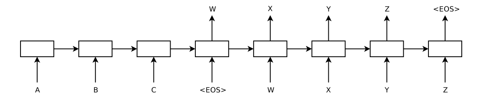
But some sentences can be really long. Can we really store all the information in a vector of hidden units?
Human translators refer back to the input.
We’ll look at the translation model from the classic paper:
Bahdanau et al., Neural machine translation by jointly learning to align and translate. ICLR, 2015.
Basic idea: each output word comes from one input word, or a handful of input words. Maybe we can learn to attend to only the relevant ones as we produce the output.
We’ll use the opportunity to look at architectural changes we can make to RNN models to make it even more performant.
The encoder computes an annotation (hidden state) of each word in the input.
The decoder network is also an RNN, and makes predictions one word at a time.
The encoder is a bidirectional RNN. We have two RNNs: one that runs forward and one that runs backwards. These RNNs can be LSTMs or GRUs.
The annotation of a word is the concatenation of the forward and backward hidden vectors.
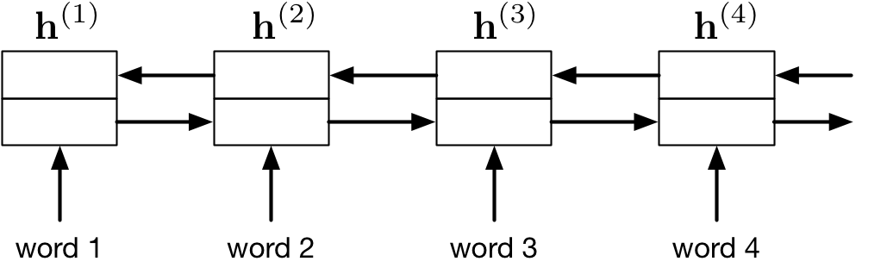
The decoder network is also an RNN, and makes predictions one word at a time.
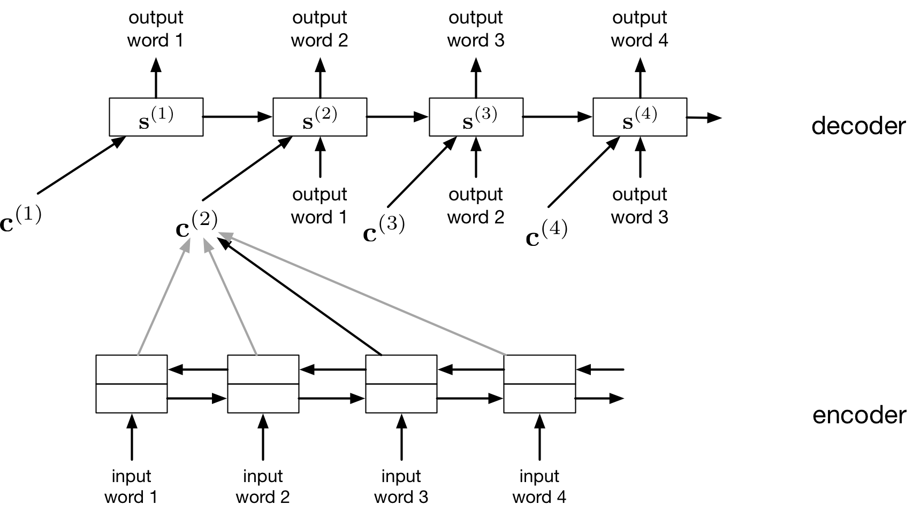
The difference is that it also derives a context vector \({\bf c}^{(t)}\) at each time step, computed by attending to the inputs
“My language model tells me the next word should be an adjective. Find me an adjective in the input”
We would like to refer back to one (or a few) of the input words to help with the translation task (e.g. find the adjective)
If you were programming a translator, you might…
If you were programming a translator, you might
An attentional decoder is like a continuous form of these last three steps.
The context vector is computed as a weighted average of the encoder’s annotations:
\[{\bf c}^{(i)} = \sum_j \alpha_{ij} {\bf h}^{(j)}\]
The attention weights are computed as a softmax, where the input depends on the annotation \({\bf h}^{(j)}\) and the decoder states \({\bf s}^{(t)}\):
\[ e_{ij} = a({\bf s}^{(i-1)}, {\bf h}^{(j)}), \qquad \alpha_{ij} = \frac{ \exp(e_{ij}) }{\sum_{j^\prime} \exp(e_{ij^\prime})} \]
The attention function depends on the annotation vector, rather than the position in the sentence. It is a form of content-based addressing.
\[\begin{align*} {\bf h}^{(1)} &= \begin{bmatrix}1 & 3 & 9\end{bmatrix}^\top \\ {\bf h}^{(2)} &= \begin{bmatrix}0 & 0 & 1\end{bmatrix}^\top \\ {\bf h}^{(3)} &= \begin{bmatrix}5 & -1 & 2\end{bmatrix}^\top \\ \\ {\bf c}^{(t)} &= \begin{bmatrix}? & ? & ?\end{bmatrix}^\top \\ \end{align*}\]
\[\begin{align*} {\bf h}^{(1)} &= \begin{bmatrix}1 & 3 & 9\end{bmatrix}^\top \\ {\bf h}^{(2)} &= \begin{bmatrix}0 & 0 & 1\end{bmatrix}^\top \\ {\bf h}^{(3)} &= \begin{bmatrix}5 & -1 & 2\end{bmatrix}^\top \\ \\ {\bf c}^{(t)} &= \text{average}({\bf h}^{(1)} , {\bf h}^{(2)}, {\bf h}^{(3)})\\ &= \begin{bmatrix}2 & 0.67 & 4\end{bmatrix}^\top \\ \end{align*}\]
\[\begin{align*} {\bf h}^{(1)} &= \begin{bmatrix}1 & 3 & 9\end{bmatrix}^\top \\ {\bf h}^{(2)} &= \begin{bmatrix}0 & 0 & 1\end{bmatrix}^\top \\ {\bf h}^{(3)} &= \begin{bmatrix}5 & -1 & 2\end{bmatrix}^\top \\ \\ {\bf s}^{(t-1)} &= \begin{bmatrix}0 & 1 & 1\end{bmatrix}^\top \\ \alpha_t &= \text{softmax}\left(\begin{bmatrix} f({\bf s}^{(t-1)}, {\bf h}^{(1)}) \\ f({\bf s}^{(t-1)}, {\bf h}^{(2)}) \\ f({\bf s}^{(t-1)}, {\bf h}^{(3)}) \\ \end{bmatrix}\right) = \begin{bmatrix}\alpha_{t1} \\ \alpha_{t2} \\ \alpha_{t3}\end{bmatrix} \end{align*}\]
\[\begin{align*} {\bf h}^{(1)} &= \begin{bmatrix}1 & 3 & 9\end{bmatrix}^\top \\ {\bf h}^{(2)} &= \begin{bmatrix}0 & 0 & 1\end{bmatrix}^\top \\ {\bf h}^{(3)} &= \begin{bmatrix}5 & -1 & 2\end{bmatrix}^\top \\ \\ {\bf s}^{(t-1)} &= \begin{bmatrix}0 & 1 & 1\end{bmatrix}^\top \\ \alpha_t &= \text{softmax}\left(\begin{bmatrix} {\bf s}^{(t-1)} \cdot {\bf h}^{(1)} \\ {\bf s}^{(t-1)} \cdot {\bf h}^{(2)} \\ {\bf s}^{(t-1)} \cdot {\bf h}^{(3)} \\ \end{bmatrix}\right) = \begin{bmatrix}\alpha_{t1} \\ \alpha_{t2} \\ \alpha_{t3}\end{bmatrix} \end{align*}\]
\[\begin{align*} {\bf h}^{(1)} &= \begin{bmatrix}1 & 3 & 9\end{bmatrix}^\top \\ {\bf h}^{(2)} &= \begin{bmatrix}0 & 0 & 1\end{bmatrix}^\top \qquad \quad {\bf s}^{(t-1)} = \begin{bmatrix}0 & 1 & 1\end{bmatrix}^\top \\ {\bf h}^{(3)} &= \begin{bmatrix}5 & -1 & 2\end{bmatrix}^\top \\ \\ \alpha_t &= \text{softmax}\left(\begin{bmatrix}1 & 0 & 5 \\ 3 & 0 & -1 \\ 9 & 1 & 2 \end{bmatrix}^\top \begin{bmatrix}0 \\ 1 \\ 1\end{bmatrix}\right) = \text{softmax}\left(\begin{bmatrix}12 \\ 1 \\ 1\end{bmatrix}\right) \\ {\bf c}^{(t)} &= \alpha_{t1} {\bf h}^{(1)} + \alpha_{t2} {\bf h}^{(2)} + \alpha_{t3} {\bf h}^{(3)}\\ \end{align*}\]
https://play.library.utoronto.ca/watch/9ed8b3c497f82b510e9ecf441c5eef4f
Visualization of the attention map (the \(\alpha_{ij}\)s at each time step)
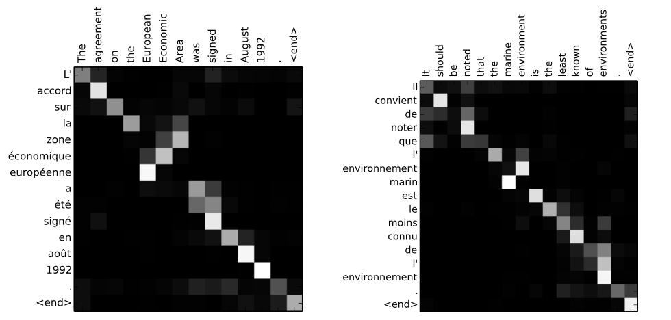
Nothing forces the model to go (roughly) linearly through the input sentences, but somehow it learns to do it!
The attention-based translation model does much better than the encoder/decoder model on long sentences.
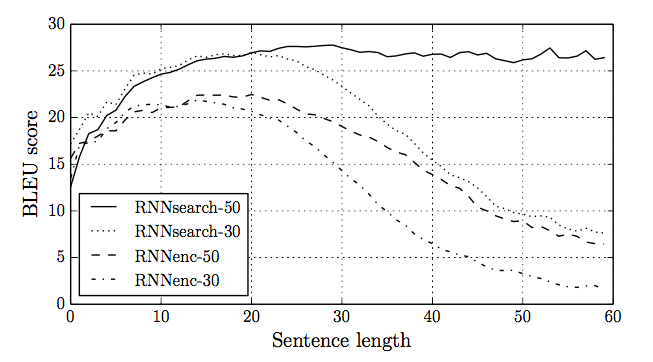
Caption Generation Task:
Attention can also be used to understand images.
The next few slides are based on this paper from the UofT machine learning group:
Xu et al. Show, Attend, and Tell: Neural Image Caption Generation with Visual Attention. ICML, 2015.
The caption generation task: take an image as input, and produce a sentence describing the image.
Similar math as before: difference is that \(j\) is a pixel location
\[\begin{align*} e_{ij} &= a({\bf s}^{(i-1)}, {\bf h}^{(j)}) \\ \alpha_{ij} &= \frac{ \exp(e_{ij}) }{\sum_{j^\prime} \exp(e_{ij^\prime})} \end{align*}\]
This lets us understand where the network is looking as it generates a sentence.
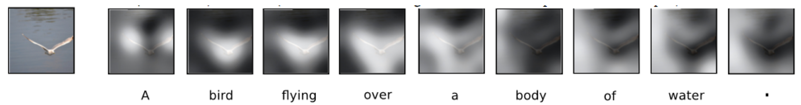
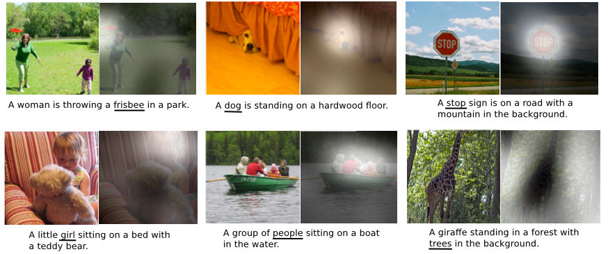
This can also help us understand the network’s mistakes.
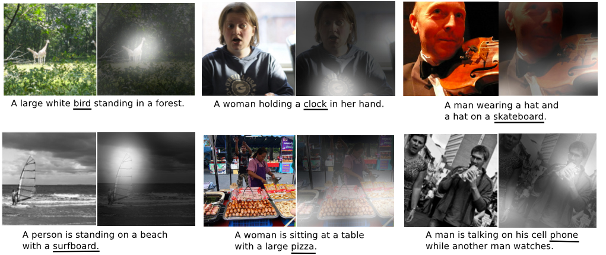
Finally, to get more capacity/performance out of RNNs, you can stack multiple RNN’s together!
The hidden state of your first RNN becomes the input to your second layer RNN.
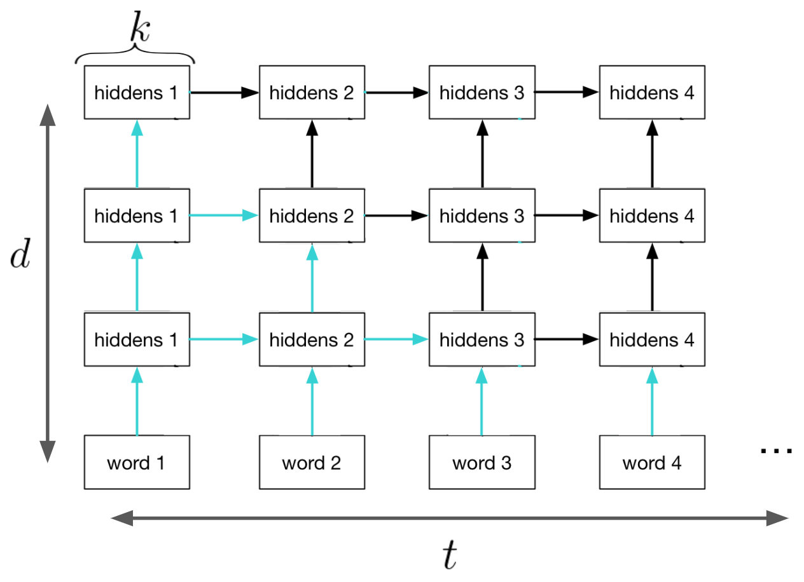
One disadvantage of RNNs (and especially multi-layer RNNs) is that they require a long time to train, and are more difficult to parallelize. (Need the previous hidden state \(h^{(t)}\) to be able to compute \(h^{(t+1)}\))
What is ChatGPT? We’ll let it speak for itself:
I am ChatGPT, a large language model developed by OpenAI. I use machine learning algorithms to generate responses to questions and statements posed to me by users. I am designed to understand and generate natural language responses in a variety of domains and topics, from general knowledge to specific technical fields. My purpose is to assist users in generating accurate and informative responses to their queries and to provide helpful insights and suggestions.
ChatGPT is built on OpenAI’s GPT family of large language models (starting with GPT-3.5), all of which are based on the transformer architecture.
Idea: Do away with recurrent networks altogether; instead exclusively use attention to obtain the history at the hidden layers
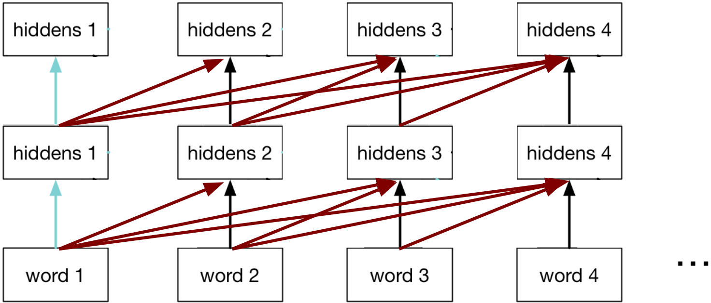
Vaswani, Ashish, et al. “Attention is all you need.” Advances in Neural Information Processing Systems. 2017.
Two problems with RNNs, even with attention:
Attention already gives the decoder a direct connection to every encoder state. The transformer uses attention everywhere, including inside the encoder and the decoder.
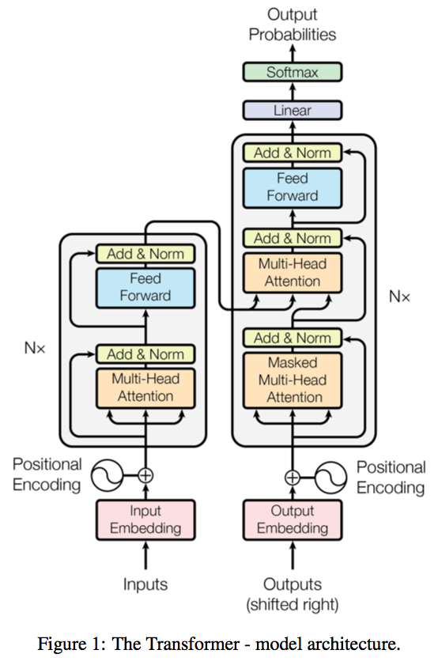
Transformer has an encoder-decoder architecture similar to the previous sequence-to-sequence RNN models, except all the recurrent connections are replaced by attention modules.
A Python dictionary d[query]:
Attention is a “soft” version of this:
\[ \alpha_j = \frac{\exp({\bf q} \cdot {\bf k}_j)}{\sum_{j'} \exp({\bf q} \cdot {\bf k}_{j'})}, \qquad {\bf c} = \sum_j \alpha_j {\bf v}_j \]
In the RNN decoder with attention:
The transformer computes queries, keys and values with separate learned linear maps, so keys and values can differ:
\[ {\bf q} = W^Q {\bf s}^{(t-1)}, \qquad {\bf k}_j = W^K {\bf h}^{(j)}, \qquad {\bf v}_j = W^V {\bf h}^{(j)} \]
In the transformer there is no RNN: \({\bf h}^{(j)}\) and \({\bf s}^{(t-1)}\) are replaced by the encoder outputs and the decoder’s own representations, introduced in the next slides.
\[\begin{align*} {\bf h}^{(1)} &= \begin{bmatrix}1 & 3 & 9\end{bmatrix}^\top \\ {\bf h}^{(2)} &= \begin{bmatrix}0 & 0 & 1\end{bmatrix}^\top \qquad \quad {\bf s}^{(t-1)} = \begin{bmatrix}0 & 1 & 1\end{bmatrix}^\top \\ {\bf h}^{(3)} &= \begin{bmatrix}5 & -1 & 2\end{bmatrix}^\top \\ \\ \alpha_t &= \text{softmax}\left(\begin{bmatrix}1 & 0 & 5 \\ 3 & 0 & -1 \\ 9 & 1 & 2 \end{bmatrix}^\top \begin{bmatrix}0 \\ 1 \\ 1\end{bmatrix}\right) = \text{softmax}\left(\begin{bmatrix}12 \\ 1 \\ 1\end{bmatrix}\right) \\ {\bf c}^{(t)} &= \alpha_{t1} {\bf h}^{(1)} + \alpha_{t2} {\bf h}^{(2)} + \alpha_{t3} {\bf h}^{(3)}\\ \end{align*}\]
\[\begin{align*} {\bf h}^{(1)} &= \begin{bmatrix}1 & 3 & 9\end{bmatrix}^\top \qquad \quad {\bf h}^{(2)} = \begin{bmatrix}0 & 0 & 1\end{bmatrix}^\top \\ {\bf h}^{(3)} &= \begin{bmatrix}5 & -1 & 2\end{bmatrix}^\top \qquad \quad {\bf s}^{(t-1)} = \begin{bmatrix}0 & 1 & 1\end{bmatrix}^\top \\ \alpha_t &= \text{softmax}\left(\frac{1}{\sqrt{3}} \begin{bmatrix}1 & 0 & 5 \\ 3 & 0 & -1 \\ 9 & 1 & 2 \end{bmatrix}^\top \begin{bmatrix}0 \\ 1 \\ 1\end{bmatrix}\right) \\ {\bf c}^{(t)} &= \alpha_{t1} {\bf h}^{(1)} + \alpha_{t2} {\bf h}^{(2)} + \alpha_{t3} {\bf h}^{(3)}\\ \end{align*}\] Q: Which values represent the Q, K, and V?
Here \(W^Q = W^K = W^V = I\): keys and values are identical, as in Bahdanau attention.
\[\begin{align*} \alpha_t &= \text{softmax}\left(\begin{bmatrix}6.93 & 0.58 & 0.58\end{bmatrix}\right) \approx \begin{bmatrix}0.9965 & 0.0017 & 0.0017\end{bmatrix} \\ {\bf c}^{(t)} &\approx \begin{bmatrix}1.005 & 2.988 & 8.974\end{bmatrix}^\top \approx {\bf h}^{(1)} \end{align*}\]
Stack \(n\) queries as the rows of \(Q \in \mathbb{R}^{n \times d_K}\), \(m\) keys as the rows of \(K \in \mathbb{R}^{m \times d_K}\), and \(m\) values as the rows of \(V \in \mathbb{R}^{m \times d_V}\):
\[\begin{align*} \text{Attention}(Q, K, V) &= \text{softmax}\left(\frac{QK^\top}{\sqrt{d_K}}\right) V = \begin{bmatrix} {{\bf c}^{(1)}}^\top \\ \vdots \\ {{\bf c}^{(n)}}^\top \end{bmatrix} \\ \text{where} \quad {\bf c}^{(i)} &= \sum_{j=1}^{m} \alpha_{ij} {\bf v}_j, \qquad \alpha_{ij} = \frac{\exp({\bf q}_i \cdot {\bf k}_j / \sqrt{d_K})}{\sum_{j'} \exp({\bf q}_i \cdot {\bf k}_{j'} / \sqrt{d_K})} \end{align*}\]
If the entries of \({\bf q}\) and \({\bf k}\) are independent with mean 0 and variance 1, then \({\bf q} \cdot {\bf k} = \sum_{i=1}^{d_K} q_i k_i\) has variance \(d_K\).
In our example (\(d_K = 3\)):
\[\begin{align*} \text{unscaled:} \quad \text{softmax}\left(\begin{bmatrix}12 & 1 & 1\end{bmatrix}\right) &\approx \begin{bmatrix}0.99997 & 1.7 \times 10^{-5} & 1.7 \times 10^{-5}\end{bmatrix} \\ \text{scaled:} \quad \text{softmax}\left(\begin{bmatrix}6.93 & 0.58 & 0.58\end{bmatrix}\right) &\approx \begin{bmatrix}0.9965 & 0.0017 & 0.0017\end{bmatrix} \end{align*}\]
With only \(d_K = 3\) the effect is small, but in practice \(d_K\) is 64 or more, and the unscaled softmax becomes essentially one-hot.
In the RNN, attention connected the decoder to the encoder. Self-attention lets a sequence attend to itself.
Given the inputs \(X \in \mathbb{R}^{n \times d}\) (one row per token):
\[\begin{align*} Q = XW^Q, \qquad K = XW^K, \qquad V = XW^V, \qquad \text{SelfAttention}(X) = \text{Attention}(Q, K, V) \end{align*}\]
The decoder generates one token at a time, so position \(i\) must not see positions \(j > i\) (those are the tokens it is trying to predict!).
We add a mask \(M\) to the logits before the softmax:
\[\begin{align*} \text{MaskedAttention}(Q, K, V) = \text{softmax}\left(\frac{QK^\top}{\sqrt{d_K}} + M\right) V, \qquad M = \begin{bmatrix} 0 & -\infty & -\infty & -\infty \\ 0 & 0 & -\infty & -\infty \\ 0 & 0 & 0 & -\infty \\ 0 & 0 & 0 & 0 \end{bmatrix} \end{align*}\]
Since \(\exp(-\infty) = 0\), future tokens get attention weight 0.
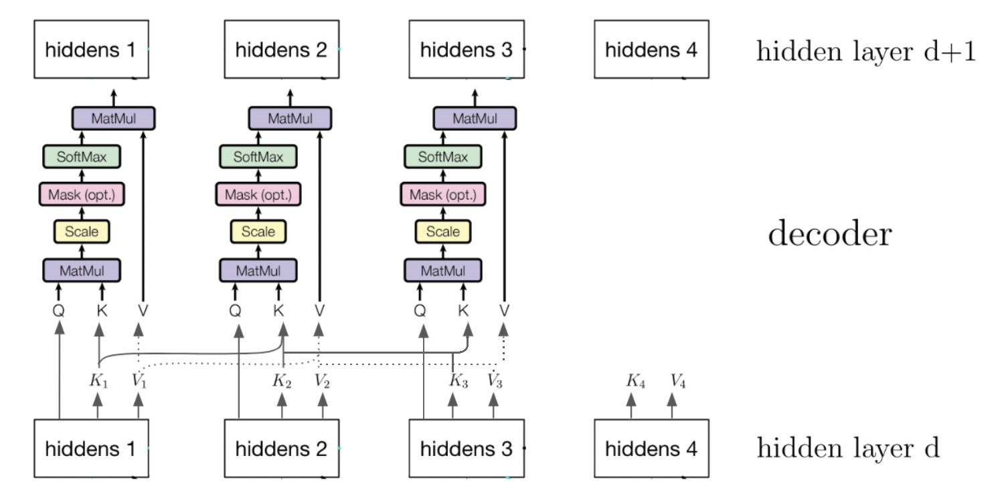
Attention block adapted from Figure 2 of Vaswani et al., “Attention is all you need,” NeurIPS 2017.
From the hidden vector \({\bf x}_i^{(d)}\) of position \(i\) in layer \(d\): \(Q_i = W^Q {\bf x}_i^{(d)}\), \(K_i = W^K {\bf x}_i^{(d)}\), \(V_i = W^V {\bf x}_i^{(d)}\), and
\[ {\bf c}^{(i)} = \sum_{j \le i} \alpha_{ij} V_j, \qquad \alpha_{ij} = \text{softmax}_{j \le i}\left(Q_i \cdot K_j / \sqrt{d_K}\right) \]
Since position \(i\) only attends to \(j \le i\), no information flows from future tokens.
Recall teacher forcing: during training, we feed the ground-truth previous token as the next input.
At test time, we still generate one token at a time: sample a token, append it to the input, and repeat.
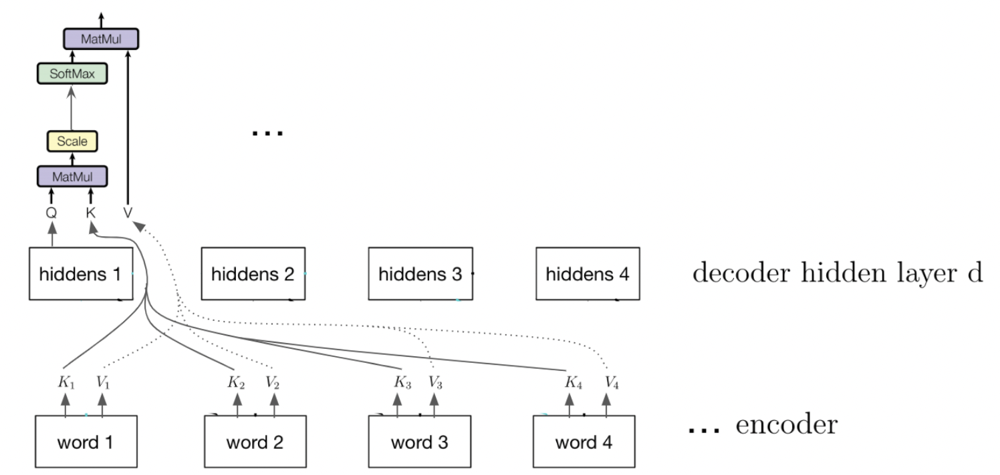
Attention block adapted from Figure 2 of Vaswani et al., “Attention is all you need,” NeurIPS 2017.
The decoder also attends to the encoder outputs (encoder-decoder attention or cross-attention):
For each input word \(j\), the last encoder layer outputs a vector \({\bf z}_j\), which gives that word’s key \({\bf k}_j = W^K {\bf z}_j\) and value \({\bf v}_j = W^V {\bf z}_j\). The same \(W^K\) and \(W^V\) are shared by all words.
This is the transformer version of the Bahdanau attention we saw earlier.
| Attention | Queries from | Keys and values from | Mask |
|---|---|---|---|
| Encoder self-attention | encoder | encoder | none |
| Decoder self-attention | decoder | decoder | causal |
| Encoder-decoder attention | decoder | encoder outputs | none |
A single attention head produces one weighted average, so it tends to focus on one or a few positions (one kind of relationship).
But we may want to attend to several things at once (e.g. the subject of a verb and its object).
Idea: run \(h\) attention heads in parallel, each with its own learned projections:
\[\begin{align*} \mathbf c_i &= \text{Attention}\left(QW_i^Q, KW_i^K, VW_i^V\right), \qquad i = 1, \dots, h \\ \text{MultiHead}(Q, K, V) &= \text{concat}({\bf c_1}, \dots, {\mathbf c_h})W^O \end{align*}\]
\[\begin{align*} \mathbf c_i &= \text{Attention}\left(QW_i^Q, KW_i^K, VW_i^V\right) \\ \text{MultiHead}(Q, K, V) &= \text{concat}({\bf c_1}, \dots, {\mathbf c_h})W^O \end{align*}\]
Unlike RNNs and CNN encoders, self-attention has no notion of position: if we shuffle the input tokens, the outputs are shuffled in the same way (the layer is permutation-equivariant). Can you see why?
“dog bites man” and “man bites dog” produce the same set of token representations. However, the order of the sequence conveys important information for machine translation, language modeling, and other tasks.
Idea: Add positional information of each input token in the sequence into the input embedding vectors.
\[\begin{align*} PE_{\text{pos}, 2i} &= \sin\left(\text{pos}/10000^{2i/d_{emb}}\right) \\ PE_{\text{pos}, 2i+1} &= \cos\left(\text{pos}/10000^{2i/d_{emb}}\right) \end{align*}\]
Each dimension is a sinusoid with a different wavelength, from \(2\pi\) to \(10000 \cdot 2\pi\).
The final input embedding is the sum of the learnable token embedding and the positional encoding (both have dimension \(d_{emb}\)):
\[ {\bf x}^{(\text{pos})} = \text{Emb}(w^{(\text{pos})}) + PE_{\text{pos}} \]
where \(w^{(\text{pos})}\) is the token at position \(\text{pos}\) and \(\text{Emb}\) is the learned embedding lookup. \(\text{Emb}(w^{(\text{pos})})\) plays the role of the RNN input \({\bf x}^{(t)}\) (e.g. a GloVe embedding), not of the annotation \({\bf h}^{(j)}\), which is computed from all the inputs.
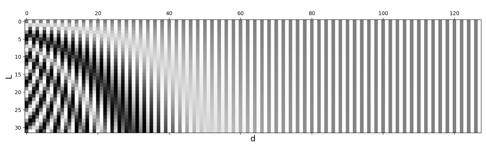
Other ways to encode position used in practice:
Encoder layer \(d\) maps the token vectors \({\bf x}_1^{(d)}, \dots, {\bf x}_n^{(d)}\) (the rows of \(X^{(d)}\)) to \({\bf x}_1^{(d+1)}, \dots, {\bf x}_n^{(d+1)}\). The first layer gets \({\bf x}_i^{(0)} = \text{Emb}(w^{(i)}) + PE_i\).
where \(\text{FFN}({\bf a}) = W_2\, \text{ReLU}(W_1 {\bf a} + {\bf b}_1) + {\bf b}_2\) is applied to each token independently.
Decoder layer \(d\) maps the output-token vectors \({\bf s}_1^{(d)}, \dots, {\bf s}_m^{(d)}\) (the rows of \(S^{(d)}\)) to \({\bf s}_1^{(d+1)}, \dots, {\bf s}_m^{(d+1)}\). The first layer gets the embeddings of the output tokens (shifted right, starting with “<BOS>”) plus positional encodings. Let \(Z\) be the final encoder outputs (rows \({\bf z}_j\)).
After the last decoder layer, a linear layer and softmax turn each \({\bf s}_i\) into a distribution over the next token.
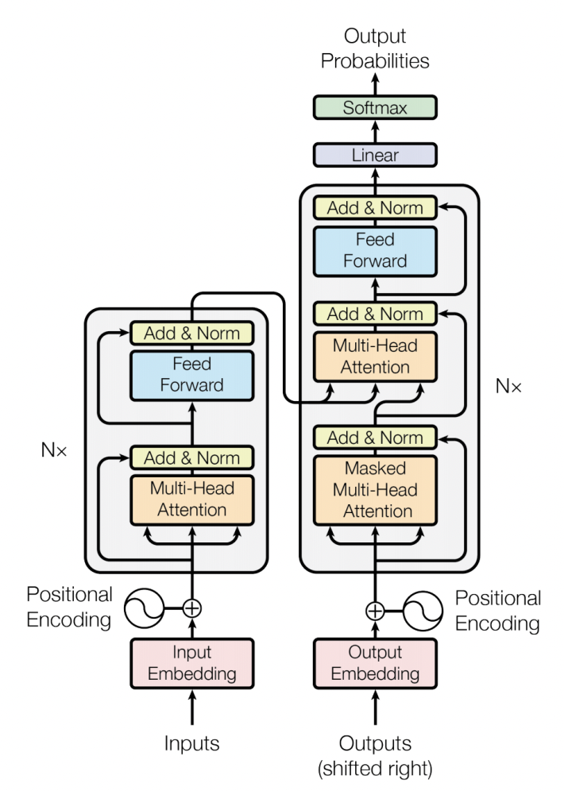
Figure 1 of Vaswani et al., “Attention is all you need,” NeurIPS 2017.
Self-attention layer learns that “it” could refer to different entities in different contexts.
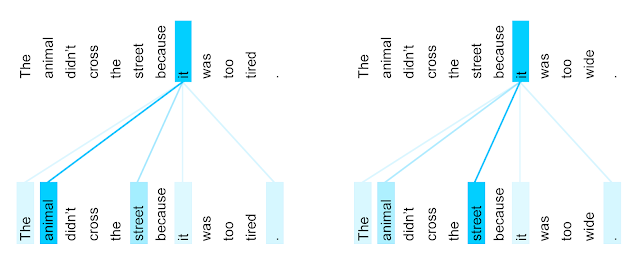
See research.google/blog/transformer-a-novel-neural-network-architecture-for-language-understanding
During backprop, in the standard encoder-decoder RNN, the maximum path length across time is the number of time steps.
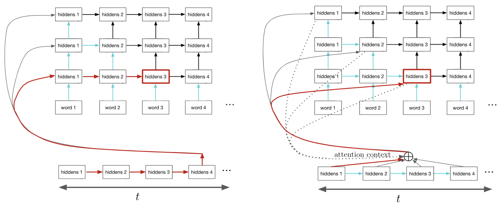
Self-attention connects every position directly to every other position, so the path length between any two positions is constant. (Learning becomes easier. Why?)
The transformer keeps the encoder-decoder structure and the decoder-to-encoder attention, but replaces the recurrence with self-attention:
| Role | RNN + attention | Transformer |
|---|---|---|
| Encoder representations | Bidirectional RNN | Stack of self-attention layers |
| Per-word encoder vector | Annotation \({\bf h}^{(j)}\) | Encoder output \({\bf z}_j\) |
| Decoder representations | Decoder RNN, state \({\bf s}^{(t)}\) | Stack of masked self-attention layers, \({\bf s}_i^{(d)}\) |
| Decoder attends to encoder | Bahdanau attention | Cross-attention |
| Word order | Reading tokens in sequence | Positional encoding |
Unchanged: teacher forcing during training, and generating one token at a time at test time.
For a sequence of length \(n\) and representation dimension \(d\):
| Layer type | Cost per layer | Sequential operations | Maximum path length |
|---|---|---|---|
| Recurrent | \(O(n d^2)\) | \(O(n)\) | \(O(n)\) |
| Self-attention | \(O(n^2 d)\) | \(O(1)\) | \(O(1)\) |
Similar to pre-training computer vision models on ImageNet, we can pre-train a language model for NLP tasks.
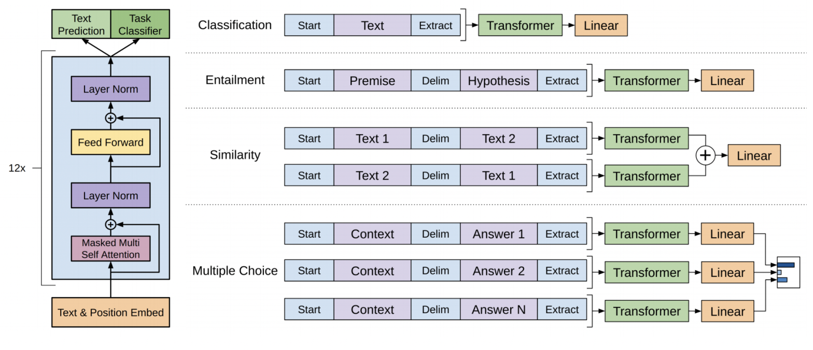
The pre-trained model is then fine-tuned on textual entailment, question answering, semantic similarity assessment, and document classification
GPT-style models drop the encoder and the cross-attention entirely:
https://openai.com/blog/better-language-models/
Title: United Methodists Agree to Historic Split
Subtitle: Those who oppose gay marriage will form their own denomination
Article: After two days of intense debate, the United Methodist Church has agreed to a historic split - one that is expected to end in the creation of a new denomination, one that will be “theologically and socially conservative,” according to The Washington Post. The majority of delegates attending the church’s annual General Conference in May voted to strengthen a ban on the ordination of LGBTQ clergy and to write new rules that will “discipline” clergy who officiate at same-sex weddings. But those who opposed these measures have a new plan: They say they will form a separate denomination by 2020, calling their church the Christian Methodist denomination.
The Post notes that the denomination, which claims 12.5 million members, was in the early 20th century the “largest Protestant denomination in the U.S.,” but that it has been shrinking in recent decades. The new split will be the second in the church’s history. The first occurred in 1968, when roughly 10 percent of the denomination left to form the Evangelical United Brethren Church.
The Post notes that the proposed split “comes at a critical time for the church, which has been losing members for years,” which has been “pushed toward the brink of a schism over the role of LGBTQ people in the church.” Gay marriage is not the only issue that has divided the church. In 2016, the denomination was split over ordination of transgender clergy, with the North Pacific regional conference voting to ban the
Poor English input: The patient was died.
Good English output: The patient died.
Poor English input: We think that Leslie likes ourselves.
Good English output: We think that Leslie likes us.
Poor English input: Janet broke Bill on the finger.
Good English output: Janet broke Bill’s finger.
Poor English input: Mary arranged for, in St. Louis, John to rent a house cheap.
Good English output: Mary arranged for John to rent a house in St. Louis.
Poor English input: Today I have went to the store to to buys some many bottle of water.
Good English output: Today I went to the store to buy some bottles of water.
Poor English input: I have tried to hit ball with bat, but my swing is has miss.
Good English output: I tried to hit the ball with the bat, but my swing missed.
Many Transformer-based models have been developed since 2017.
Many benchmarks have been developed such as GLUE and SQuAD.
Big players in the LLM space include Google (Brain, DeepMind), Meta (formerly Facebook, FAIR), Microsoft, Amazon, Anthropic, Mistral, DeepSeek, EleutherAI, OpenAI, Cohere, Hugging Face.
A pre-trained language model only continues text. To turn it into an assistant:
Ouyang et al., Training language models to follow instructions with human feedback. NeurIPS, 2022.
Pre-training data is mostly web text. Given the prompt “Explain the moon landing to a 6 year old”, a pre-trained model may continue with more similar questions instead of answering.
Idea: collect demonstrations of the behaviour we want: a prompt \({\bf x}\), and a response \({\bf y} = (y_1, \dots, y_T)\) written by a human labeler, showing what a helpful answer looks like.
| Prompt \({\bf x}\) | Response \({\bf y}\) |
|---|---|
| Explain the moon landing to a 6 year old. | People went to the moon in a big rocket, walked around, and came back to tell everyone what they saw. |
Fine-tuning the pre-trained model on these pairs is called instruction tuning or supervised fine-tuning (SFT).
Concatenate the prompt and the response into one token sequence, and train with the same next-token cross-entropy as in pre-training (teacher forcing, causal mask), but only count the loss on the response tokens:
\[ \mathcal{L}(\theta) = -\sum_{t=1}^{T} \log p_\theta\left(y_t \mid {\bf x}, y_1, \dots, y_{t-1}\right) \]
Limitation: the model can only imitate the demonstrations, and they are slow and expensive to write. For many prompts it is much easier for a person to say which of two responses is better than to write the best response themselves. This is what RLHF uses.
For every pair where labelers preferred \({\bf y}_w\) over \({\bf y}_l\), minimize
\[ \mathcal{L}(\phi) = -\log \sigma\left(r_\phi({\bf x}, {\bf y}_w) - r_\phi({\bf x}, {\bf y}_l)\right) \]
\[ \mathbb{E}_{{\bf x},\; {\bf y} \sim p_\theta(\cdot \mid {\bf x})}\left[ r_\phi({\bf x}, {\bf y}) - \beta \log \frac{p_\theta({\bf y} \mid {\bf x})}{p_{\text{SFT}}({\bf y} \mid {\bf x})} \right] \]
Result: labelers preferred the outputs of the 1.3B-parameter InstructGPT over those of the 175B-parameter GPT-3 (Ouyang et al., 2022).